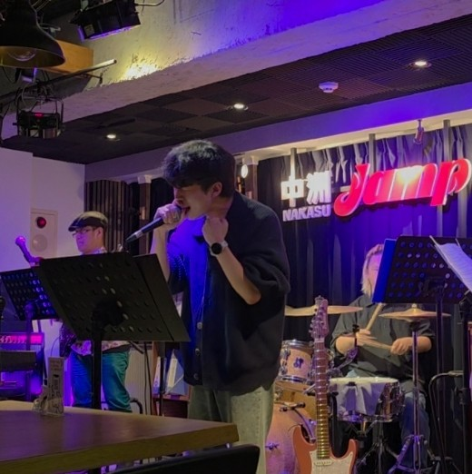

첫 번째 프로젝트 사례
대표 프로젝트의 목표, 기여 범위, 핵심 구현과 결과를 이곳에 소개할 예정입니다.
A new thought is closer than you think.
게이머의 시선으로 재미와 불편함을 관찰하고, 개발자의 방식으로 이를 구현하며 성장 중입니다. 플레이 경험을 더 깊이 이해하고, 문제를 직접 분석하고 해결하며, 더 나은 게임을 만드는 개발자를 목표로 합니다.
프로젝트 보기
Tools & Technologies
Selected Work
문제 정의부터 구현과 회고까지, 프로젝트에서 맡은 역할과 기술적 선택을 정리합니다.
대표 프로젝트의 목표, 기여 범위, 핵심 구현과 결과를 이곳에 소개할 예정입니다.
개발 과정에서 해결한 문제와 배운 점을 중심으로 차근차근 채워갑니다.
Learning Notes
짧은 학습 기록과 구현 과정에서 얻은 기술적 인사이트를 공유합니다.
게임 로직, 도구, 디버깅 경험을 다시 활용할 수 있는 형태로 기록합니다.
Profile
더 나은 플레이 경험을 만들기 위해 구현의 이유를 고민하고, 문제 해결 과정을 기록하는 게임 개발자입니다.
GitHub에서 작업 보기